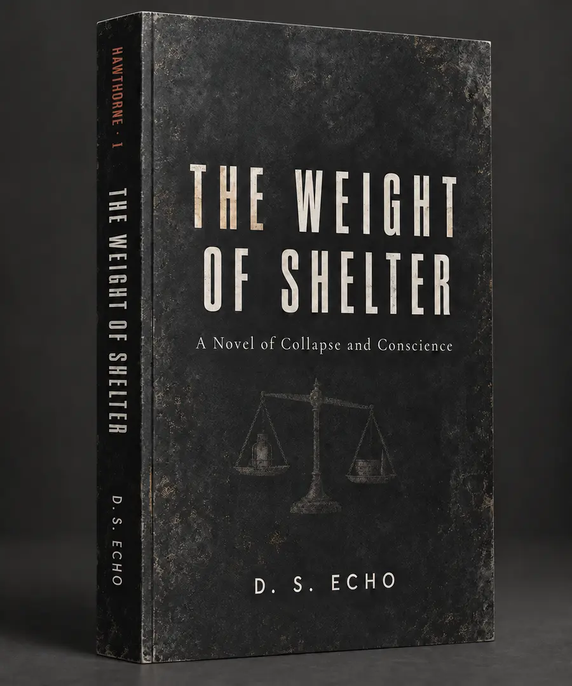

Then the numbers
become people.
Gray Fever is overwhelming the systems built to protect people. Micah Carver has spent his life counting inventory. Now every shortage has a name—and every decision carries a human cost.
Hawthorne
Character-driven post-apocalyptic fiction about ordinary people rebuilding more than shelter: relationships, institutions, and the rules they are willing to live by when every solution creates another moral cost.

The Weight of Shelter
Gray Fever is killing people faster than the systems built to protect them can respond.
Micah Carver is an inventory manager. He is used to counting parts, shortages, and deciding what can be stretched.
A character-driven post-apocalyptic novel about conscience, responsibility, authority, and the moral cost of keeping people alive when there is no longer a system to decide what is fair.
What gives one person the right to decide who gets protected when there is not enough for everyone?
The Terms of Alliance
Hawthorne has learned how to endure. The next problem is what happens when independent communities can no longer pretend that roads, fuel, information, medicine, and risk belong to only one place.
Cooperation can protect people. It can also create expectations, leverage, and decisions that reach beyond a single community.
How much autonomy can a community keep once other people begin depending on it—and it begins depending on them?
The Hawthorne Dilemmas
Meet the people. Weigh the choices. Live with the consequences.
Interactive moral scenarios inspired by the pressures at the heart of the Hawthorne series.
There is no correct answer—only the weight of choosing.
One reserve. Two needs.
A settlement has one remaining emergency battery bank before a hard freeze. The same reserve can either extend overnight radio coverage for outside warnings or keep critical building circulation running longer if the generator fails.
Where do you put the reserve?
Why it makes sense
Reliable radio coverage gives the settlement a chance to hear about approaching danger, road failures, medical emergencies, or another community asking for help. Information can prevent people from walking into a problem they never saw coming, and keeping contact open also protects relationships that may matter far beyond one night.
What it costs
The battery is now unavailable to support the occupied buildings. If the generator fails during the coldest hours, circulation drops sooner and the people already under your roof face a more immediate physical risk. You chose a wider field of protection, but you did it by accepting more danger for the people closest to you.
Would the decision still feel right if the generator actually failed?
Why it makes sense
The people inside are not hypothetical. They are already depending on the settlement to keep occupied spaces safe. Reserving power for circulation buys time if the generator fails and reduces the chance that a mechanical problem becomes a medical one during the freeze.
What it costs
Radio coverage ends earlier. That may mean missing a warning, losing the chance to coordinate with another group, or failing to hear someone who needs help. You protected the people you could see, but the decision may leave you blind to risks outside the walls—and to people who believed you were still listening.
Does responsibility begin with the people already inside, or with everyone your choices can still affect?
The road everyone needs.
Three independent communities depend on the same damaged road. One community has heavy equipment, one has fuel, and one has the largest labor pool. The repair will benefit all three, but no one wants a shared project to become a precedent for shared authority.
Do you create a joint repair agreement, or keep each group responsible only for its own stretch?
Why it makes sense
The repair becomes faster, safer, and more efficient because each community contributes what it can actually provide. Equipment is not sitting idle for lack of fuel, fuel is not wasted without enough labor, and everyone gains a road that works as one system rather than three disconnected pieces.
What it costs
The moment the groups make one successful shared decision, they have created a precedent. Next time there is a dispute over fuel, security, salvage, or access, someone can point back to this agreement and argue that cooperation already exists. A practical solution can quietly become an expectation—and expectations can become pressure.
When does coordination become authority, even if nobody intended it to?
Why it makes sense
Every community keeps control of its own people, equipment, and resources. There is no shared command structure, no argument over who decides priorities, and no danger that helping once will be interpreted as accepting a permanent obligation.
What it costs
The road may remain unreliable longer because the resources do not line up where they are most useful. One section can be repaired while another remains dangerous. People may be injured or cut off because everyone protected their independence so carefully that they failed to solve a problem none of them could solve alone.
Is independence still a virtue when everyone pays for the inefficiency?
Nine people at the gate.
A small settlement has food and sleeping space for nine more people through winter, but taking them in will erase nearly all of the community's safety margin. Turning them away protects the current residents. Accepting them may save nine lives—and make every future shortage harder.
Do you take them in?
Why it makes sense
You have the capacity today, and refusing people while beds and food still exist can feel like protecting comfort rather than necessity. Nine additional people may also bring skills, labor, knowledge, and relationships that make the settlement stronger than the inventory sheet suggests.
What it costs
Your reserve disappears. A crop failure, illness, damaged heater, or delayed supply run now threatens more people with less room to recover. Current residents did not create the crisis at the gate, but they will share the consequences of your compassion. You may have saved nine people by making everyone less secure.
How much risk are you allowed to impose on people who already trusted you?
Why it makes sense
The settlement keeps the buffer that protects everyone already inside from the problems nobody can predict. Leadership has a responsibility not only to use today's inventory, but to preserve enough margin for tomorrow's failure. Protecting capacity can be the difference between one hard winter and a cascading emergency.
What it costs
The nine people still exist after the gate closes. They may become sick, desperate, or die somewhere else because you chose to protect a reserve that might never be needed. The community remains safer, but that safety now has faces attached to its price.
Is preserving a margin the same as preserving lives, or only choosing whose lives count first?
These are original interactive scenarios inspired by the series' themes, not scenes from the novels.
Stay close to Hawthorne.
New dilemmas, excerpts, character notes, and publication updates from D. S. Echo.
D. S. Echo
D. S. Echo writes character-driven speculative fiction about ordinary people facing difficult ethical choices in extraordinary circumstances.
His work explores responsibility, fairness, authority, and the philosophical dilemmas that arise when there are no easy answers and every decision carries a cost.